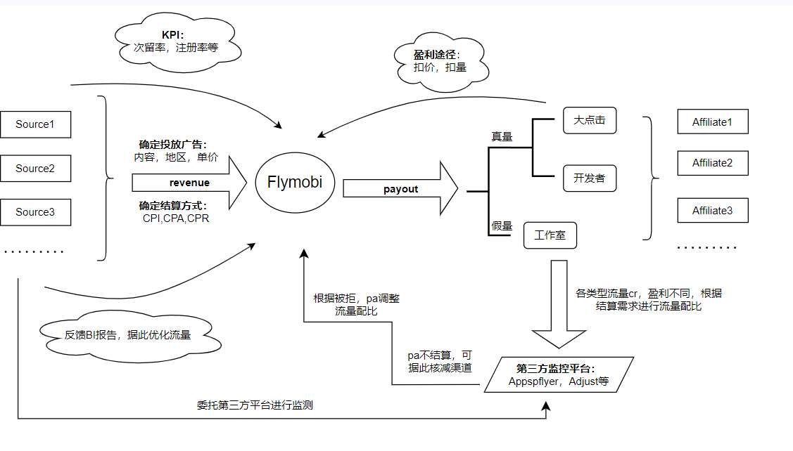

将广告按需投放至各大平台的精准投放方式。

| 结算方式 | 定义 | 备注 |
|---|---|---|
| CPI(cost per install) | 每个安装的成本 | |
| CPA(cost per action) | 每次行动的成本 | 实际行为往往为注册，存在BI结算 |
| CPR(cost per registration) | 每个注册的成本 | 按照广告主要求的注册条件 |
| CPB(cost per booking) | 每个预定的成本 | 如旅游软件预定 |
| CPM(cost per click) | 单个点击成本 | |
| CPM(cost per mille) | 千次展示成本 | |
| ······ |
提高盈利，降低成本
• 尽可能选择直客或直链单，此类单客户潜力较大，降低因多次过手导致的利润损失。
直客：存在自己的产品。需每日关注，及时跟进广告主质量反馈进行优化，尽量降低工作室占比。
直链：广告主授权三方链接的单子，优化同直客。